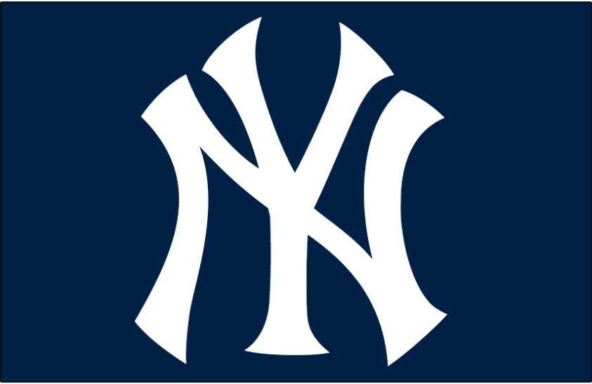
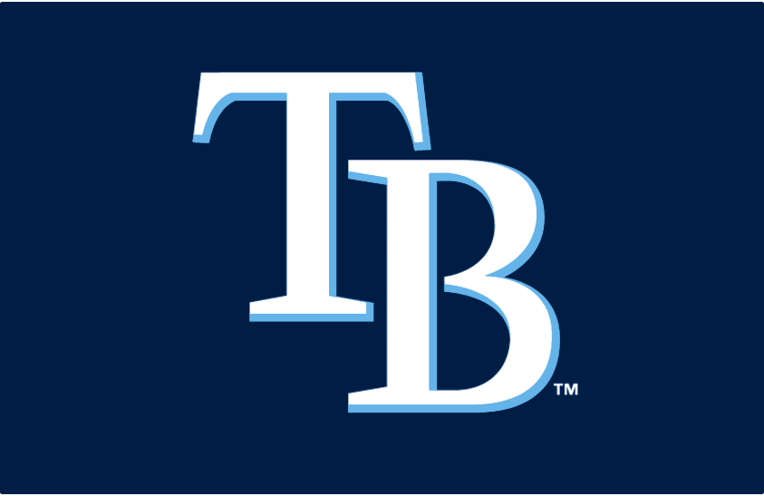
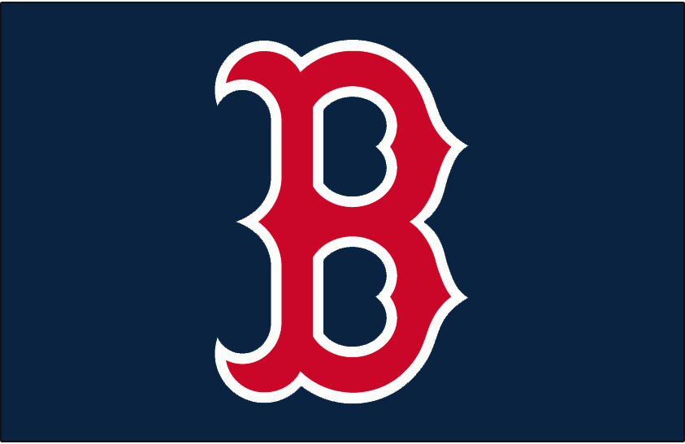

The AL East has been around since 1969. The Baltimore Orioles, Boston Red Sox, and New York Yankees have been in it since it was created. The Toronto Blue Jays joined it in 1979, and the Tampa Bay Rays joined it in 1998. They have all stayed in the division since.
The division had been heavily dominated by the Yankees in the 2000's. In fact, they had won the division 9 straight years until the Red Sox won it in 2007. They are still dominating the division, but not as much. The division winners have won 5 World Series titles since the 2000's.
The upstart Rays won the division and pennant in 2008, also eliminating the Red Sox in the American League Championship Series, but they lost to the Philadelphia Phillies in the World Series in 5 games. The Orioles won their first division title in 17 years when they won it in 2014, sweeping the Detroit Tigers in the American League Division Series before being swept by the Kansas City Royals in the ALCS. The Blue Jays won the division in 2015, beating the Texas Rangers in the ALDS in 5 games. Game 5 was also the game with Jose Bautista's infamous bat flip. They lost to the Royals in the ALCS in 6 games.
2022 division standings:
| Place | Team | Record | Postseason |
|---|---|---|---|
| 1 | NY Yankees | 99-63 | Lost ALCS (Houston) |
| 2 | Toronto | 92-70 | Lost ALWCS (Seattle) |
| 3 | Tampa Bay | 86-76 | Lost ALWCS (Cleveland) |
| 4 | 83-79 | Did not qualify | |
| 5 | Boston | 78-84 | Did not qualify |